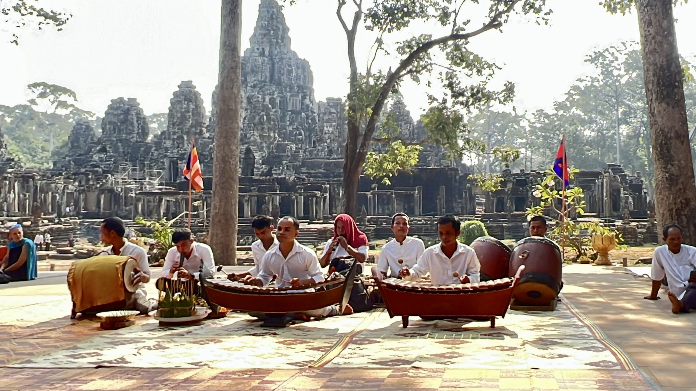

The Experience
Where history comes alive
Few places have left an impression on us quite like Angkor. Watching the first rays of sunlight illuminate Angkor Wat before the crowds arrive is one of those travel moments that stays with you long after you've returned home.
While Angkor Wat may be the headline attraction, it's only one chapter of the story. Exploring the smiling faces of Bayon, wandering through Ta Prohm as giant tree roots engulf ancient stone walls and discovering hidden temples deep within the jungle makes every day feel like an adventure.
Based just outside Siem Reap, Angkor offers far more than remarkable architecture. The warmth of the Cambodian people, bustling local markets and slower pace of life create a destination that feels every bit as memorable as the temples themselves.
